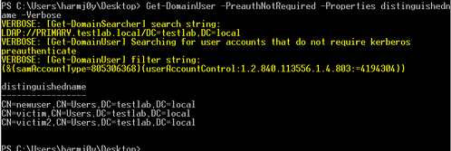

If you’re already an authenticated (but otherwise unprivileged) user, you can easily enumerate what users in the domain have this setting with the LDAP filter (userAccountControl:1.2.840.113556.1.4.803:=4194304). PowerView‘s Get-DomainUser already has this implemented with the -PreauthNotRequired parameter:
PS> Get-DomainUser -PreauthNotRequired -Properties distinguishedname -Verbose
